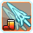
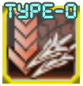
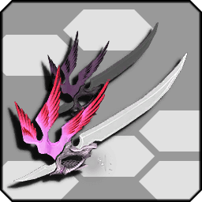
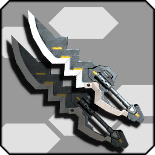

Overview
You are here because you want to play Bouncer and you’re probably wondering to yourself, one of the following;
"How can I get the most fun out of this class?"
"Why won’t Katori shut up about this class?"
"What even is this class─
Well… that aside. You’ve come to the right place. Let’s begin, shall we?
Global/NA Player Index
With the advent of PSO2 Global/NA, many things have been renamed in that iteration of the game. We'll be placing a small key here to help those unfamiliar with JP English Patch terms understand the guide in the event they play only the Global/NA version. Please note we'll only be using terms relevant to this guide.
- Attack Types:
- S-ATK = MEL Pwr
T-ATK = TEC Pwr - Weapon Type Names:
- Dual Blades = Soaring Blades
- Skill Tree Terminology:
- The Arks Layer Skill Simulator has an option to convert the skill tree terms into NA skill tree terms. Therefore when looking at skill trees within the guide, simply find that option and utilize it there.
- Photon Arts (PAs):
- These are still labelled as such in Global/NA but sadly there is an inconsistency.
In Global/NA, Just Attacks, known as "JA" to JP Server Players, as known as Perfect Attacks. Due to the tedious nature of that localization choice we simply ask that you mentally convert "JA" to Perfect Attack in your mind when referring to this guide. - Ring names and Photon Art names:
- Ring Names and Photon Arts have their Global/NA counterpart names added in parenthesis.
That is all for now, this section will update should the need arise later.
What is Bouncer?
And no, Katori, you’re not allowed to answer that. You’ll scare them away.Through SEGA's "changes," the difference of weapon roles in Bouncer's repertoire has changed since Episode 3! Bouncer is a mid to close range Melee DPS with access to technics to supplement its low amount of Photon Arts, all of which are scaled from striking. With this in its arsenal, it has the second highest normal attack damage and all of its damage options boast gratuitous hitboxes as both a big strength and weakness.
Skill Tree
Bouncer's skill tree is by far one of the most convoluted creations SEGA has ever wrought on its player base, but fear not, you too can pump your kicks and soar with your dual blades like a pro!
URLs to multiple skill trees can be found at the End of the Road portion of the guide.
**it's heavily advised that you proceed through the rest of the guide first before jumping right into the skill trees.
The Essentials

Must Haves
Jet Boots Gear
What’s a weapon without its gear? Jet boots gear gives you access to a damage bonus of up to 15% for max gear across your Photon Arts and normal attacks. The most important part of this is that it appeases your most commonly used stance considering you can change your element on the fly by casting a technic of the corresponding element. This is the main way you’ll maintain gear. Vinto and natural gear drain keeps elements!Dual Blades Gear
What are Dual Blades without gear?! Wet noodles. Dual Blade Gear gives you access to a damage bonus up to 20% for max gear across your Photon Arts and normal attacks. The most important part is that now your gear can be expended to throw Photon Blades, the most powerful tool Dual Blades have. Photon Blades are projectiles with slight homing that can be thrown only when you have gear even during movement with the Weapon Action. If you are to run into anything with the Weapon Action you also deal damage once to the first thing in your path. The power notation ramps ridiculously with the corresponding ring. Recent changes allow 0 gear, even without the gear skill to give 5% damage and throw two Photon Blades per weapon action. Only one gear is expended during Weapon Action.Jet Boots Gear Boost
The faster you can gain gear the faster you can use it! There's no reason not to have this handy. The increase in gear accumulation will keep your rotations clean and fast with the right tools. Accumulation from this skill caps at 150%.Rare Mastery Bouncer
This a primary bonus to get as it gives a 1.1x damage multiplier for Jet Boots and Dual Blades.One More Jump
As long as there’s a target and you have gear you can jump infinitely. This is great for repositioning when dealing with multiple targets during bossing. Can be performed while charging technics.Jet Boots Escape
You don’t boss without a little utility to keep yourself alive and among them invincibility frames during the Weapon Action of Photon Arts will make damage that might put you in harm's way a little easier to perform. For some reason it still works outside of main class.Elemental PP Restorate Field
While Jet Boots get a lot of damage from their normal attacks you have to worry about management during PA rotations with technics for upkeep. This field gives you an extra 3 pp per hit for hitting with the elemental weakness on top of your natural on-hit recovery.Shifta Air Attack Boost/Deband PP Restorate
As a Bouncer, as you’d imagine, you spend a fair amount of time attacking in the air and the tree accommodates this. While Shifta boost is active you gain an additional 5% damage while you’re in the air. This is critical to your upkeep. Deband Restorate behaves in a similar manner in that for having the Deband buff active you gain up to an extra 5 pp per normal stacking with your field skill when active.Rapid Boost/Rapid JA Bonus
These two are skills a Jet Boot Bouncer can’t simply boss without. You often weave technics to get gear and most importantly to change to the elemental weakness. Rapid Boost reduces charge time of Jet Boot PAs by up to 50% and it reduces technic charge time by 15% as well. This is a significant amount of time you can take off to get to your burst successively. Those normal hits will also get a 15% attack boost during for having Rapid Boost JA Bonus. The attack speed previously from Rapid Boost is now innate for JB.Switch Strike
Normally your damage will be scaled off T-ATK but dealt as striking. This makes Jet Boots damage and PAs scale from your S-ATK. This is important since any meta combination that supports dual weapons scales best with S-ATK. This is one of the most important parts of your tree and vital to have.
Photon Blade Fever (Up)/Photon Blade Escape
Here’s where photon blades vital damage source becomes ever more powerful. Photon Blade Fever is an active that doubles the amount of photon blades thrown. The skills fever up increases the damage dealt by these blades by a whopping 30% while Photon Blade Escape adds invincibility time to movement done while throwing photon blades by up to .35 seconds because what’s going to stand still and just let you beat them up?Elemental Stance/Stance Up
This is your main multiplier as a Bouncer. Stances are actives that are permanent once activated. You can only have one stance active at a time from a single class. Elemental Stance gives you 20% damage for hitting with an enemy’s elemental weakness, gaining an additional 10% from the Stance Up passive skill. This is compared to getting half as much without elemental weakness since the non-weak element boost is only 15% total.Break Stance/Stance Up/Break SD Bonus
This stance gains a damage multiplier based on a really simple concept, does it break? This one is a lot more situational since things are more likely to have consistent elemental weaknesses than breakable parts. Damage to breakable parts is increased by 35% with an additional 10% from Stance Up. Break SD Bonus uses the base Break Stance multiplier for scaling. Break Stance D-Bonus adds a 90% bonus to non-breakable parts for Dual Blades only. Unaffected by Stance Up/Stance Critical.High Level Boost/Dodge Auto Field
Field Remain
The skill is self-explanatory, it allows others to keep the effects of the field skills Elemental PP Restorate and Critical Field for 30 after they leave your range. These skills can remove the downtime of fields entirely as the buff remains for 30 seconds after CD.Optionals
Stance Criticals
Critical hits are the maximum amount of damage an attack can deal before multipliers are calculated due to damage variance placing your damage dealt per attack between 95-100% (average 3%). Critical rates at 70% or above are DPS increases on average. Bouncer should have no issue maintaining 100% with the correct skill rings but never will you have to invest the max 5 to achieve this.Stat Ups (S-ATK Up, T-ATK Up)
Increases indicated base stat values by up to 50 or 100 total for the more points invested. Loses value as content progresses.Step Advance
Invincibility window during Mirage Step maxes at .20 seconds during step. Bouncer weapons are teeming with abilities you more commonly invest in to do this.Uncommon
Heal Share/Heal Bonus
Heal others nearby for 20% of what you heal for. Heal Bonus increases what you heal for by 15%. Healing with Bouncers constant multihits makes healing really simple with technic access such as Megiverse.Bouncer Mag/Craft Mastery
Elemental Burst
Rings
-
L/JB Tech Arts SC (Jet Boots Combo Variant SC) Recommended (First Priority)
This ring reduces the charge time for technics following any Jet Boot Photon Arts by 50% at most. This speeds up JB rotations considering loops that weave technics. Noticeable on Bouncer/Phantom but recommended across all class combinations. Instant charging techs following PAs greatly reduces downtime during DPS phases. Used for the combo ring L/Kick and Snatch. -

L/DB Snatch (Soaring Blades Tackle) Recommended (First Priority)
Increases the striking damage from moving into enemies during Dual Blade Weapon Action by up to 1800%. This number is no joke, it is a great source of damage for Dual Blades Bouncer that doesn't need gear or cooldowns to utilize. Used for the combo ring L/Kick and Snatch. -
L/PB Homing Recommended (Second Priority)
Adds a strong homing effect that can turn on a dime on targets that increases with level. Adds an 8% damage boost at max grind. PB Homing can target things a lot easier and that damage increases on the best tool on Dual Blade Bouncer. Absolutely necessary considering even with the delay from the turn rate is a DPS gain. -
L/Mag Excite(Mag Excitement) Recommended (Second Priority)
Lowers the interval at which your mag uses its auto action and increases the damage dealt up to 300% at +20. Does not affect SP action. Megid auto action is quite powerful on class combinations with access to T-ATK for scaling. Making this an ideal extra damage ring for BoPh. -
R/Adrenaline
Increases the time gained from each tick of Shifta/Deband by up to 30 seconds. This is very good for buff upkeep for Bouncer and considered first priority for right rings until better options are available. -
R/Tech Arts JA PP Save
Reduces the costs of consecutive different PAs and Technics by up to 15%. Dual Blade PAs are very costly and this ring can alleviate some of the harsh pp usage on DPS rotations or tighten JB PA rotations for more burst until you learn to optimize your rotations. -
L/JB Elemental Keep
Disables Elemental Burst and allows free usage of Jet Boot Weapon Action without element loss. -
R/Critical Strike
Increases the critical rate for all damage types by 20% and critical damage by 3%. Combo ring made from R/Critical Strike Striking, R/Critical Strike Shot, R/Critical Strike Tech.
Weapons
Bouncer has two weapons that, in play, are interchangeable. These two weapons are Dual Blades and Jet Boots. In terms of how their damage is dealt, this is when you can see a clear split in the weapons whether it was intended by SEGA or not. Jet boots are a better weapon for burst as dual blades excels in sustain. However, meta builds ideally utilize both. Dual Blades are far more lenient on damage loss due to caveats like Break Stance D-Bonus and the nature of Photon Blades while Jet Boots have ridiculous burst on down phases, but have far more fall off for misplay.
Dual Blades (Soaring Blades), The Mobile Multi-Hit Monster
- Dual Blades are a weapon whose main gimmick is its ability to throw projectiles called photon blades by using its gear gauge via Weapon Action.
- Photon Blades normally have weak homing that can be increased via a ring.
- Most dual blade photon arts are multi-hit and primary use isn’t damage but to regain its gear quite quickly to get back to photon blades which is the best source of damage while in Photon Blade Fever.
- Photon Blade Fever (PBF) has a 120 second cooldown and an active time of up to 45 seconds. Considered to be the window of downtime since your best tool is at half of its damage capability during cooldown.
- During this cooldown, Dual Blade PAs such as crafted Kestrel Rampage and Immortal Dove are some of the best ways to maintain your DPS.
- Kestrel Rampage Type-0 is consistent damage ticks for a significant amount of damage in trade for spending all your gear. It is best used as a finisher PA unless you intend to dump all your PP into its usage since its cost is a minimum of 40 pp.
- DB Snatch is also a good source of damage as well as defensive mechanic that allows you to reposition and damage anything you Weapon Action into while moving in a direction with dual blades. This uses all your gear as well.
Jet Boots, Quick Kicks and Heavy Hits
- Jet Boots main gimmick is the ability to change elements on the fly. So they’re naturally a "rainbow" weapon set 6 in 1.
- Jet Boots Photon Arts hit for a lot less and have higher power notations than Dual Blades Photon Arts, allowing for instant burst in short phases.
- Rapid Boost cooldown is 120 seconds and has an uptime of 45 seconds. Though Rapid Boost lowers charge time of PAs and technics by 15% and also increases attack speed that much as well as Just Attack damage by just as much. Jet Boots are capable of getting the same effects permanently from rings that stacks on top of this while active meaning JB users have virtually no downtime!
- Jet Boot Normal Attacks have the second highest power notation in game as far as normals go. Even without PP you can output damage that can rival but not beat your Photon Art rotation.
- Jet Boot Weapon Action is evasive movements with 3 spammable actions before a short pause. Weapon Action used by during movement is briefly invincible before dealing damage. None of this costs gear!
- Jet Boot Weapon Action during Jet Boot Photon Arts causes them to change behavior and power notation. These behavioral changes are casting support technics while dealing damage or gaining a sufficient amount of iframes that you can cancel out of.
- Vinto Gigue (Jetsweep Kick) is the highest hitting Photon Art Jet Boots have. Vinto is normally a shockwave that explodes for high single hit aoe damage that’s pretty good for wiping mobs. The weapon action changes this into a short range kick that does a ridiculous amount of damage. Since the last update Vinto no longer resets element when gear is expended.
- Recent updates increased the power notation of the Jet Boot Photon Art Gran Wave (Grand Wave). The damage dealt when point blank is increased as well!
- The craftable version of the Jet Boot PA Strike Gust increases in power by 1.5x past 7th rotation and onward. Considering the gratuitous hitbox size this can make for some ridiculous sustained DPS.
Photon Arts
-
Distraction Wing (Dash Wing)
Gap Closing Photon Art for Dual Blades. Gains distance with gear. 50% of damage notation per hit. -
Heavenly Kite
Swing your Dual Blade in an upwards spinning motion. Fills gear instantly if all hits are landed. Ideal for filling gear with minimal displacement during DPS phases. Permament JA window. -
Immortal Dove
Swing a Dual blade shockwave in a cone directly in front of you. Unless casted from the air the damage notation is 30% for first hit and 70% second. When casted from the air it’s a single hit for 100% of the notation. It is the shortest Dual Blade PA as well as the second hardest hitting one. -

Kestrel Rampage/Type-0 (Kestrel Rampage Zero)
Kestrel Rampage swings stationary blade projectiles from your Dual Blades in a slashing motion in every direction before sending them up into the air to rain down upon your foes. This action is the longest PA Bouncer has. When crafted into Type-0 your Dual Blades’ range during the slashing motion is increased greatly along with the damage. -
Justice Crow
Uses your dual blades to draw the image of an ARKS Star that has weak homing and flies towards nearby enemies and explodes with splash damage for moderate damage. Fills gear completely. Grounds you during animation. Drawing animation is Guard Frames. -
Starling Fall (Starlings Fall)
Gather blades that explode out in an area around you. Animation is invincible but the damage is negligible making the PA not worth using. -
Dispersion Shrike (Disperser Shrike)
Fly in a forward with a projectile sphere hitbox that assaults anyone with multiple hits who is within range. If all hits are landed, instantly fills gear. Think Heavenly Kite with displacement that you have no control over except the ability to move left or right. -
Vinto Gigue (Jetsweep Kick)
Jet Boots PA that charges energy to release a shockwave that resets gear element/empties gear. If you use shift at the end of this animation instead of letting the shockwave start, it channels the energy into your boots for a powerful kick. This is the most powerful Photon Art that Jet Boots have due to its ridiculous notation. -
Strike Gust/Type-0 (Strike Gust Zero)
A cartwheel motion that spins up to 3 times while moving upward. Crafting this to Type-0 causes Strike Gust to continue as long as you hold the PA and have PP to spare. The drain is about 10 PP second and the damage exponentially increases after the 7th revolution. Decent gear if you have the spare. Weapon action any time during this PA slams with a small shockwave for 3 hits that also autocasts Shifta in a small AoE. -
Gran Wave (Grand Wave)
This is the Jet Boot gap closing PA. Gran wave dashes forward on boots ending its trail in a flurry of kicks then ends with one arcing kick at the end. This Photon Art increases in damage from being up close to its target. If all hits land you gain 2 gear. Permanent JA Window. Weapon action is extended iframes, autocasts Deband in a small AoE. -
Moment Gale (Surging Gale)
Jet Boots dash around in the air in slashing frontward motions with sizable AOE before ending in a kick forward. Weapon Action at any time during this PA causes a suction effect and also autocasts Zanverse. Weapon Action animation can be jump cancelled. -
Tempest Raid
Compound Photon Art (Buildup Photon Art) with lightning shock (10%) followed by 3 successive rings bolts (18% each) followed by an ending ring that deals twice the damage (36%). Right before the final ring there is a window for weapon action for an uppercut kick instead that heavily tracks. Very long range, ignores defenses.
Demonstrations
What’s a good explanation without visual examples? Here are some bread and butter combinations most commonly used by Bouncers.
DWing PBF Circles
During Photon Blade Fever 🠢 (Distraction Wing 🠢 Directional Weapon Action)

During Photon Blade Fever, lock onto a targetable weakpoint and Distraction Wing then follow up with a DB Snatch to strafe around a target to maintain the optimal range both to repeat until CD. This is one of the three PBF combos and the easiest to perform. Good for any stun phases or aggressive bosses with permanent large open weak points. (Ex.Dark Falz Persona, Falz Hunar, Falz Angel, Omega Appregina).
Expected to be performed with S6: Soaring Ballet, L/ PB Homing
Immortal Dove Snatch Heavenly Kite PBF
[During Photon Blade Fever + (Heavenly Kite JA Cancel 🠢 Snatch 🠢 Immortal Dove 🠢 Snatch)]

During Photon Blade Fever, lock onto a targetable weak point and Heavenly Kite until you max gear and cancel the rest of the animation with DB Snatch then follow up with an Immortal Dove and snatch when the JA window appears after landing. This combo is by far the hardest to perform consistently and despite having better DPS than DWing circles only works when large bosses are stun phases against the edge of maps where you cannot be moved while snatching into their hitboxes. (Ex. ESC-A Falz Mother, Deus ESC-A Zephyros, Profound Darkness).
Expected to be performed with S6: Soaring Ballet, L/ PB Homing
Heavenly Kite Cancel PBF
[During Photon Blade Fever (Heavenly Kite JA Cancel 🠢 Snatch)]

During Photon Blade Fever, lock onto a targetable weak point and Heavenly Kite cancels into DB Snatch on the first JA window available. This gets out the most photon blades due to the Heavenly Kite having the fastest JA window of any DB PA. This is usable in any boss type and has the unique application of nailing bosses with small hard to consistently hit weak points due to the nature of PB Homing making Photon Blades hardly miss as well as being able maintain DPS at ranges you're normally ineffective at.
Expected to be performed with S6: Soaring Ballet, L/ PB Homing
Kestrel Cancel
[Kestrel Rampage-0 🠢 Snatch at the Start of the Blade Rain]

During Kestrel Rampage-0 the moment your arms cross in the animation you can cancel with a well timed DB Snatch skipping the animation for the duration of the blade rain where the JA window would normally appear. This is ideal since it also refunds part of the cost for the PA since Gear 0 DB weapon action still throws two Photon Blades.
Expected to be performed with S6: Soaring Ballet, L/ PB Homing
BoHu Rotations
[Gran Wave 🠢 Gran Wave 🠢 Vinto Gigue]

The bread and butter for PP dumping on JBs. Alternate normal attacks (particularly normal 2 or 3) in for PP recovery. Best done at point blank, stationary weakpoints.
BoPh Rotations
[Tech 🠢 Vinto weave Normal 2 🠢 Normal 3 Vinto for PP recovery]
Requires S6:Soaring Ballet (S6: Soaring Heavendance)

Baseline bread and butter loop for BoPh. Technics casted from subpalette do not cycle normals. Using this trick you can purposely Tech 🠢 Vinto until you cycle to your lowest PP value relative to where your Normal 2 should be then use N2 🠢 N3 🠢 Vinto repeatedly to recover with minimal damage loss. This is made possible only with S6:Soaring Ballet considering the gear gained while in midair in this timeframe should be around 1 gear.
Neo Cabliss Mechanic
[Additional guard frames on PA startup mechanic]

Guard Frames start from the moment the PA is used and lasts for .6 seconds from animation start. Ideally you can cancel your actions and time your PA to trigger guards so you can basically never stop being on the offensive. Works for all JB PAs.
Vinto Comparison
Top = Plenzer Vinto, 78 Frames (1.18s)
Bottom = Base Vinto, 118 Frames (1.91s)


Off-Meta Viability
This wouldn’t be a guide if we didn't explain things to those who want to go further and make something on their own (and sometimes fail horribly in the process). Here are some prevalent off-meta builds that work for Bouncer.
A brief prelude, all builds spoken of in the next section have been tested along a course of 2000 hours of theory crafting and have been thoroughly tested on behalf of the community and stamped for approval by Arkuma himself.
(TL: Oya?)Subs and Flubs
- ✔ = OK!
- ❌ = Not OK!
 Bouncer/Hunter ✔
Bouncer/Hunter ✔
(The Baseline Standard)
Recommended if you are new to Bouncer that you start here. The starting point and most stable build for Bouncers. All the basics are here. Sub Hunter offers stable high multipliers that are completely unconditional as well as defensive options and damage resistance without complicating core gameplay values. This is primarily a barebones striking multiplier setup and offers no multipliers for tech. Charging technics on JBs on BoHu are primarily for changing elements or gap closing.
 Fighter/Bouncer ✔
Fighter/Bouncer ✔
(NT Crafting, Rippers, and Slayers Oh my!)
Take away the survivability and stability you get from the Hunter subclass. Your precious Automate? Your best buddy Iron Will? Gone. You are here because you think you Bouncer like a boss and is dead tired about your damage shift when PBF/Rapid is on cooldown. Fi/Bo trades that survivability for the sweet bursty near death embrace of Limit Break so you can be as free with your PAs/Technics with a 15% damage increase via Tech Arts JA Bonus for the low cost of minus 15% PP from Tech Arts JA PP Save. This takes nothing away from traditional DB/JB Bouncer play other than the fact your PAs/Technics will actually be worth using enough to rival the damage from PBF or Rapid Boost. The main gimmick of this is your DPS uptime from LB and the caveat of Craft Mastery boosting both your defensive and offensive capabilities through NT crafted Invade DBs and units with timed abilities add roughly 100+ all defenses. JB FiBo builds are not favorable in current meta.

Bouncer/Fighter ✔
(Tech Applicable Multipliers, Higher Multipliers lower consistency, Chase Build)
Plays like a normal hunter sub with trading survivability for technic bonus damage and pp reduction, viable with Jet Boots only. Considering Fighter as a class does not offer safety nets like Hunter does, Jet Boots become the only viable weapon due to how fast they are able to attack as well as the iframes from main class skills that are per attack, which are abusable anytime you use Weapon Action. Smash that Weapon Action with all your might. Not recommended for beginners. Not worth using outside a specialty build in JP tied to JB S5.
Bouncer/Braver ❌
(Noob Trap, This isn’t Episode 3)Those who pitch sub Braver make the mistake of looking through the tree with expectations to use stance that has situationals compared to Fury and abuse of Attack Advance for some reason despite the ring existing. Bouncer/Braver players die as easily as a Fi/Bo minus the potential multipliers or reasoning and synergize less than Bo/Fi that fits a specific niche, this is a bad call.
Techer/Bouncer ✔
(Support-Based, Rest in Peace...?)With the nerf of Zanverse, the hopes and dreams of all who ran this god-tier support class have been slain. While Jet Boots boast the fastest casting via cancelling and Techer sub does have Elemental Weakness multipliers, the amount of upkeep this takes compared to other Techer combinations makes it far harder to maintain upkeep making it an advanced option for seasoned Bouncers though it’s weaker than BoFi.
Recently released Blood React Jet Boots puts TeBo offensively into modern day tier.
Bouncer/Summoner ✔
(Tech applicable multipliers, Bulky)An alternative with a damage cap than Bouncer/Hunter. While Point Assist (115.00%) with Support Fire (110.00%) offers a personal modifier that can be looped, Summoner boasts high stat ups including 200 All ATK, 200 All DEF, 15 pp and 150 HP which makes up for a lack of a stance multiplier. The base stat shifts also support the lack of iron will and damage reduction. The problem with the consistency of Summoner sub is Point Assist leaves when a part breaks. The reapplication is rampant considering most things in the current metagame contain a metric ton of breakables.

Bouncer/Phantom ✔
(The Golden Standard, Highest unconditional multipliers for Tech, Decent Striking Multiplier, Fastest Rotations)The height of Bouncer metagame. Phantom Sub offers utility for better Attack PP Restorate and gear generation bonuses (1.5x from Full Drive and 1.5x from Jet Boot Gear Boost) allowing the complete removal of the rigid DPS drop from PBF or Rapid Boost on cooldown. Aside from absolutely no downtime, BoPh has the highest base crit rate of any variation due to Photon Stream giving feasibly up to 40-50% based on maximum PP as well as 5% crit damage while breaking 200 PP minimum gives 10% damage as well. Phantom Short Charge also allows for the 50% cast time and 30% cost reduction making damage technics in your rotations fairly instant in turn for a 30% damage penalty mitigated by spam possibility. Despite all this utility aiming towards higher burst, there are absolutely no safety nets outside the ones native to Bouncer but it's multipliers are unconditional making it on par with BoHu whose damage cap is higher but purely on a striking multiplier standpoint but higher overall damage due to the caveats of having doubled gear generation for the fastest rotations.
Bouncer/Etoile ❌
(Tech applicable multipliers, pretty bulky)Etoile sub offers a lot of utility that’s unfortunately already native to the Bouncer tree. Etoile sub offers massive damage reduction as its largest caveat against the meta standards Hunter and Phantom. Its multipliers would be great if Bouncer actually needed the PP reduction on PAs from Tech Arts Count Bonus or the multiplier actually worked for Technics. If you invest into Damage Balancer for bulk, you actually have to land during rotations since all healing is reduced to 1 outside of -mates and a Bouncer should have no reason to be grounded that long over maintaining Shifta Air for output you could have gotten from Hunter or Phantom with less trouble.
Bouncer/Luster ✔
(Phantom Sub but with like 100% more DMC)Multiplier-wise, it's competitive with BoPh over the course of long combat scenarios. The Voltage mechanic is key to CD reduction, PP cost reduction, 25% crit rate, 20% damage reduction, auto status cleanse/immunity, 10% damage, and 150% active/passive PP regen.
Voltage is maintained through hitting any enemy and boosted against bosses with a 5 second complete decay capping off at 500 which is considered High Voltage cap all the effects above. Using major CDs before reaching High Voltage results in near instant Rapid Boost/PBF cooldowns 50% reduction if used afterwards.
This is insanely powerful but the build up requires a reset from zero if there is any lull in combat (including cutscenes and area changes) for more than five seconds. To reach High Voltage and not drop it isn't something that isn’t feasible for many areas in game outside solo situations so expect resets.
Thankfully the high hit rate for Bouncer weapons makes the Voltage build relatively painless. Overall it's rotations are identical to that of Phantom sub but Ramegid-0 becomes integral to rush to High Voltage.
Voltage resets have a severe impact on the consistency. Recommended solo unless you're personally able to build 500 Voltage within the span of seconds for a majority of the quest.
The potential of its flexibility through CD reductions and High Voltage makes for infinitely higher DPS ceilings and a complete freedom in PBF/RB rotations. Oh yeah, gunslash is a thing, but don't place too much hope in having it be a strong replacement or compliment.
Bouncer 14★/15★ Weapon Analysis
-
Jupiter Tullus is the unique 14★ DB with the high base stats and an active that helps all DB rotations. It fires Thundering Blades when you perform a PA. Jupiter Tullus
Jupiter TullusOn average the Thundering Blades fired from JT deal about as much as a Kestrel-0 tick at max gear per PA proc and 2 for Kestrel. This means on average JT attacks 1.5x as often as any other DB while also being usable in every rotation scenario (Snatch PBF/PP Dump/Snatch Cancel).
Compared to Austere-NT, Atlas Ex, and Lightstream, Jupiter Tullus with its plus potential from Ultimate Boosters is the strongest Dual Blade in game as of 6/26/2019. -
Zirenheit-NT
SSA Slots:Zirenheit-NT is the highest multiplier cap 14★ JB in the game currently, now rare.
Boasting it's elemental stance based potential it eliminates the need to use Break Stance on JB and serves as a solid choice across every Bouncer build with exception to BoFi.
With a maximum multiplier of 151.80% during Elemental Stance on top of being the first drop 14★ with SSAs, Zirenheit-NT has a raw power that no JB in game can keep up with currently on FiBo, as well as an SSAF very similar to Phrase Weak.
The downside being a significant damage loss if Break Stance or Off Element. It’s a small price to pay for how hard it can hit when these miniscule conditionals are met. -
Gilles Weihen is the best T-ATK 14★ JB in the game currently. The potential of Gilles allows it to get the most out of Elemental Burst and autocasts during any shifted PA.
Gilles WeihenGilles features a huge boost to Elemental Burst damage that, similar to JT, doubles your damage output during PA rotations.
Utilizing the high base T-ATK that they come with, by pairing them with most T-ATK builds, you can DPS sufficiently as a caster. Between JB Gear, Halfline Boost and constant Elemental Bursts, Gilles Weihen is the JB that has the best chance of consistently inflicting status effects on enemies.
This turns it into JBs that can reliably abuse Chase multipliers, making them the best JBs to include in a mobbing build as well as a strong contender for bossing builds. However they are still outdone by Zirenheit-NT's raw power outside BoFi. -
Phobos/ShienPhobos SSA Slots:Shien SSA Slots:
The Phobos series has a potential that is not conducive to any type of Bouncer play… so uh. Yeah they sure do exist. Don’t stress over them.
They look totally sweet though. So put them in your room if you’re the type who likes collecting.They serve as an excellent baseline DB/JB in game. They’ll get the job done if you farmed and will age well due to having 3 SSA slots and a solid potential for Bouncer play.
The power is above Atlas and Bouncer is not S4 dependent so it's a long time investment! -
Ares-NTSSA Slots:
Ares-NT is the current best series in game for raw power and usability. The potential allows for flexibility in utility involving multiple mag setups. The power comes from filling the Helix Photon Blast to get a higher base multiplier over Jupiter Tullus (after potential is calculated), Zirenheit, and Shien under ideal setups. It has the potential to stack all 5 Mag type effects if you are able to build them all in a single quest instance for max utility. This isn’t something that’s plausible in a Boss EQ.
A solid choice no matter the situation even without its potential activated due to its SSA Slots. Before Helix PB is filled, Ares is below the current top Bouncer 14★s. -

Boots of DjibrilSSA Slots:
Boots of Djibril is a jetboot that gains its power in burst periods hampered by a 10s recast timer. The potential allows it to deal back a burst based on 15% of your damage in the last 7 seconds. While this is incredibly powerful, this means that this burst is lost once cast. Ten seconds of downtime makes this a swap only option to fully utilize its potential.
Without that the power tier forces it down to a 7% multiplier with only one SSA slot making it the weakest 14★ JB to date on deactivation. -
Ceres ZaraSSA Slots:The endgame baseline for Jet Boots and Dual Blades.
Ceres Zara has power that surpasses Jupiter Tullus’ upkeep via it's potential, a hit count mechanic that rewards you when a specific number of hits is achieved. Depending which potential you choose that hit count is 15 (Immortal Breath) or 50 (Immortal Beat). The reward is a barrier in addition to power increase of 7.5% on top of its base 10%. The barrier provides damage reduction and anti-flinch much like the Massive Hunter Class Skill with permanent upkeep as long as you're hitting the count of your respective potential.
While solo play favors the 50 hit potential for longer uptime and the stronger barrier that provides 20% damage reduction that can be maintained for 40 seconds, in Emergency Quests it's favorable to take the 15 hit potential as that offers a 10% damage reduction with 8 seconds to maintain and since you can do that fairly quickly you will get your damage multiplier maxed out sooner.
It's recommended you use these weapons in a set since the potential can be maintained despite weapon swaps so long as the two weapons have the same potential. (e.g. both weapons have Immortal Breath or Immortal Beat) -
Celestial XionSSA Slots:
Potentially the most powerful 14★ series in game boasting high base stats as well as a 10% multiplier and a 30% instant pp regen effect alongside S1-S3 SSA slots making it ideal for uptime across both weapon types.
-
Austere-NT
SSA Slots:Three Potentials Nemesis-NT/Slave-NT/Ares-NT S1-S3 applicable. Hidden latent 10% automatic PP recovery.- Nemesis
- Base 9% multiplier and the ability to generate a shield every 30 seconds that disappears if hit. During this shield 60% damage reduction and 25% pp cost reduction. Excellent for PP dump phases if timed correctly.
- Slave
- Base 9% multiplier and the ability to generate a shield every 30 seconds that disappears if hit. During this shield 30% automatic PP recovery and 40% attack PP recovery. Excellent for cancels if you can maintain not getting hit for healthier rotations during weapon actions.
- Ares
- Base 5% multiplier and maxes at 7% as Photon Blast gauge maxes. Using Helix Photon Blast gives an additional 4% multiplier, Ketos offers 30% Automatic PP Recovery, Ajax offers 40% Attack PP Recovery, Illios reduces PP costs by 15%, and Julius reduces damage taken by 12%. Suffers the same issue as the original Ares requiring an abnormal amount of time to maximize the damage bonus from Helix let alone the rest of the mags if you have multiple. Great for Endless and Guruguru (loop) map types.
-

Atlas Ex
SSA Slots:Lumiere and Atlas potentials combined and an one-time-use weapon based Iron Will. S1-S4 Accessible.Boasting a 10% multiplier, Atlas Ex has the second highest base stats in game and upgrades from the original Atlas series meaning it keeps the S4. This gives it either permanent uptime via Vampiric Strike for common use S3s like Vital Intent or if you’re running a crit build to risk for more damage on already ridiculously powerful JB normals via Calming Intent. While DBs get the choice of Genesis Ring for 1 in 6 rainbow elements to satisfy Elemental Stance multiplier uptime or Vampiric for less reliance on Automate during super armor in rotations and Vital Intent upkeep if non-crit build.
-
Lightstream
SSA Slots:Celestial but stronger with the highest base stats in game and completely recovering PP and further increasing damage by 4% when the PP threshold activated for 30 seconds. Recast CD is 2 minutes.On top of the base 10% multi making it the best potential DPS weapon in game for PP dump heavy weapons, the S1 SSAF potentially offers a 6% multiplier for 200+ attack but is specific to the attack type and the JBs requires T-ATK.
Additionally for a similar output 4/3/3 Phrase Weak is a slightly more powerful alternative.
-
Awake Duos/WalkersSSA Slots:It is the strongest 14★ series for bossing as it has a 20% multiplier against them.
It’s power is around Austere and has PP recovery in regular intervals clocking in at 4/sec. Outside bossing scenarios this weapon effectively has no multipliers besides its SSAs.
-
Dim Dual Blades/Jet BootsSSA Slots:Run of the mill 14★ series that’s very common.
Decent power base at 12% and 10% damage reduction. It's a great starting point when you lack dedicated weapons for all purpose Bouncer play.
-
Mirage Fafnir/SholiduSSA Slots:14★ Orbit recolors with a 6% base multiplier and increases the damage of PAs by 12% for 14 seconds.
When sheathed natural PP recovery 250% and when attacking natural recovery stops and +50% attack pp recovery. Not much use outside a PP battery.
-
Twin Crea SaberSSA Slots:
Has a 12% base multiplier with bonus effects on Bouncers fields:
- During Critical Field
- 4% more damage.
- Elemental PP Restorate Field
- +70% Attack PP Restorate.
There are stronger options but if this your only option then running 5/3 200 Phrase Weak puts these right under Austere.
-
Serpen Blazes
SSA Slots:Dual blades with a base multiplier of 11% and increases the damage of normals by 40% and increases the attack range.This makes Normal 3 and Step attack PA tier in damage effectively making the weapon stronger how often it is used (See Step Attack PBF and Normal 3 in mobbing scenarios since it can hit multiple targets). Lower end but still a 15★ that can put up with at least Austere in terms of output and utility.
-
Serpen Plenzer
SSA Slots:JB with 8% base power that also greatly speeds up the start up of Vinto Gigue (down to 1.18 seconds from 1.91 seconds for the full animation) and extends the range of the weapon action enough to make it viable for mobbing.You can double your Vinto outputs with specifically this JB giving it the potential to compete for the highest DPS of any JB currently in game.
-
Orgei Malice
SSA Slots:15★ dual blades with a base multiplier of 15% and during Distraction Wing at full gear, fires a X-Shaped projectile that adds an extra hit to the PA expending all gear and halting recovery from the hits.This has the potential to screw up gap closing really hard considering full gear drain removes your 20% multiplier at dire times. In PBF you can maintain max gear between snatches but only on BoPh. BoHu's gear generation will stop right before Gear 3.
-
Neo Cabliss
SSA Slots:15★ JB with a 9% base multiplier and a unique mechanic allowing all PAs on start up to have guard points equal to 36 frames (.6 seconds).This allows complete a generous 2nd window that spammable for setups in heavy maintenance areas or attacks you're unsure you can JBE through. While the utility is high, the total capable multipliers puts it slightly below Atlas Ex in range for power with an SSAF that offers more utility in the form of an S2. Essentially a powerful alternative contender for an endgame JB.
-
Quelle Styx All ClassSSA Slots:14★ JB with a 10% base multiplier and a 25% PP reduction via a successful One More Jump. Effect doesn’t wear off unless you land on the ground.
The effective power of this JB post nerf forces it back into a low tier. Not even worth using anymore.
-
Blood Ribzeal/React All ClassSSA Slots:14★ series with base 12% multiplier that caps at 16% for consecutive Just Attacks with innate knockback resist.
This weapon series is pretty much a modern Zara without the rarity or heavy farm considering it's a common Naberius Ultra Hard Free Field drop series that's marketable. Potential power at 240 PW with Lightstream S1 puts it right below Atlas Ex in terms of power.
-
Shinonome Reisen/ToushuuSSA Slots:
15% power and 15% passive PP recovery that constantly drains 5% of your max HP every 10 seconds. Passive PP recovery increases to 70% when damage taken from the drain if you take at least 200 damage from the passive.
Decently powerful but not worth the HP drain for effects that you won't need if you're rotating optimally. -
Novel Dual Blades/Jet Boots
SSA Slots:14% base power and 20% base crit rate.At best it ends up near Atlas Ex at best. Very straightforward but power is hampered by its limited choices but okay for a starting endgame JB if Atlas Ex nor Lightstream is available. Upgrades to the Liberate series.
-
TesguraisSSA Slots:
Dual Blades with a gimmick of powering up over the course of 15 second intervals displayed by colored Auras. Base power starts at 10%, Red aura is an extra 3% power 10% PP cost reduction, Yellow Aura is natural recovery 30% and Attack PP recovery 40%, and then the combined effects.
Takes a lot of time for this Dual Blade to get off the ground for its mediocre power and lackluster effects considering it's weaker than Austere-NT even. -
NT-Crafted 13★SSA Slots:
Recent crafting update gives off meta combinations like Fi/Bo better choices to compete with their meta counterparts. Currently the best crafted weapon for Bouncer is Invade-NT since the base stats are basically in line with the likes of Atlas EX/Lightstream even on main class due 10% bonus from Craft Mastery.
- Dual Blades
- 2127 (2339 at +35) S-ATK
- Jet Boots
- 1980 (2178 at +35) S-ATK
2116 (2327 at +35) T-ATK
-
Liberate Dual Blades/Jet Boots
SSA Slots:20% Crit Rate, 16% Damage, and 15% PP Cost Reduction.The S5 slot consists of old potentials from 14★ weapon series including Jupiter Tullus for Dual Blades and Gilles Weihen from Jet Boots. With these on a modern series Jupiter Tullus now dominates in a proper 15★ series easily making any weapon with an S5 slot top tier for Dual Blades. The S4 slot for extra DPS or utility depending on what you’re looking for. Vampiric Strike works well for survivability in solo play while Raising Pursuit is the ideal damage option for highest output. Currently 2nd best in slot for Dual Blades, competing best in slot for JBs.
-
Shihou Suzaku
SSA Slots:3% Hidden Power boost, 15% Attack Speed during activation.This dual blade has the unique potential of increasing attack speed over time capping at 15% as long as your damage taken doesn’t exceed 10% of your maximum HP else the boost resets. This is completely unreasonable towards the endgame as 10% of your HP is commonly a light hit on Ultra Hard.
-


Puras/Still Series
SSA Slots:10% base power, 15 seconds to cap at 16%, gains one hit of massive hunter, 40% damage resist, 60% natural PP recovery, and regen 20 PP every 10 seconds.Starting at an absolutely nasty 15% power difference from Liberate, Stil is the second series with an S5 slot available making this an automatic contender for the current endgame.
-
RA Blade
SSA Slots:Unconditional 15% power and enables step counterattack that fires a projectile. Pretty much a Hero counter for some reason. DB Step attacks don’t maintain air time.
Counterintuitive to how Bouncer is expected to play airborne. Novelty weapon at best. -
Darkbanisher Ayer/Lightweaver Cras
Darkbanisher SSA Slots:Lightweaver SSA Slots:Similar base attack to Stil with a 12% unconditional damage, 20% PP cost reduction every 10 seconds. Stronger than Stil's minimum. Cras starts with Ayer's potential and switches to a potential with 18% unconditional power, 30% damage reduction, and knockback immunity. 30 second recast period.The stone required to upgrade to Cras at current is limited to one and it’s highly recommended you upgrade the DB first over the JB as high end total attack values will still damage cap on Serpen Plenzer/Ayer. Ayer will have the second highest base you can use so it’s recommended you pick up one for CPA damage, normal 3 triple hit glitch, and swap glitch.
End of the Road
Common Skill Builds and Tools
Credits
Thank you to all that helped me through this labor of love.
- Gyrus Hex, for putting up with my Bouncer rants
(It's enough to kill a man) - To PSO2 Fleet for driving me to finish this guide that was on the back of my to do list.
- To my friends who think I’m the Bouncer equivalent of a broken record!
(They aren’t wrong but now I can at least make others suffer) - To SilentWorld and Nishikawa for being my recording slaves throughout this little adventure, love ya.
Now it’s your turn Zenora! Gimme that RA guide you’re hiding!
The aforementioned RA Guide that Zenora created.- For any further questions I can be reached via Twitter @ryutensei or by Discord at
Kyle#9612 - Bouncer Discord available here! https://discord.gg/eQ5YUXw
- State of Bouncer in Episode 5 out now: https://youtu.be/Oe1_zdYqGY0
JP Player ID:13174572
And last but not least, my wonderful editor for supplying all the memes, images and suffering all this madness with me. You’re the best, Snarby.